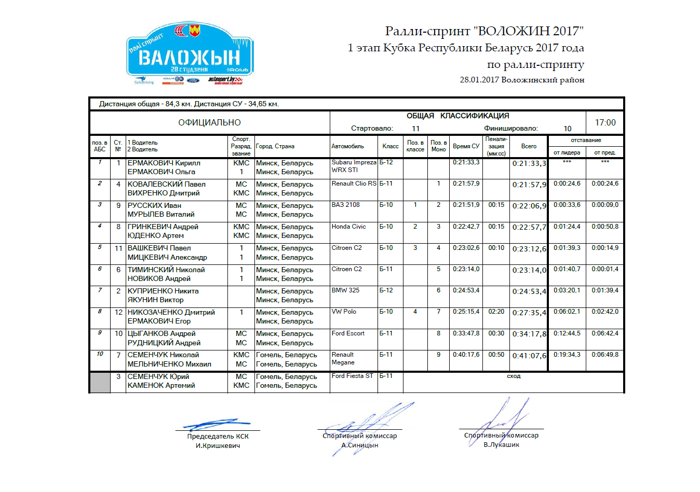

Фотоотчет. Ралли-спринт "Воложин-2017"
30.01.2017 12:46 Alec
Раллийный сезон 2017 официально открыли ралли-спринтом 28 января под Воложином. Опасения, что гонка пересекается с Halls Winter Rally 2017 - не оправдались. То ли родной кубок милее, то ли побаиваются спортсмены Литвы после 300 озер, то ли банальное отсутствие финансирования экипажей.. зато под Воложином собралось 11 боевых и 3 "нулевых" экипажа.
Стартовали экипажи в странном порядке: Вторым стартовал №3 Юрий Семенчук на Ford Fiesta, потом №4 Ковалевский на Renault Clio (причем штурманом у Павла в этот раз был Дмитрий Вихренко, недавно вернувшийся с Дакара) - а уже после №2 BMW Никиты Куприенко - свежепостроенный автомобиль из-за объема двигателя "попал" в класс Б-12.


В течение гонки вообще все перемешалось из-за сходов, №7 Семенчука-младшего и №10 Цыганкова (который выступал со штурманом Андреем Рудницким) переместились в конец канала.


Успешно выступил Иван Русских, который восстановил свой ВАЗ 2108 и чуть было не забрался на II место в абсолюте (лишь 15 секунд штрафа сделали его третьим)

На этом фоне Андрею Гринкевичу пришлось довольствоваться 2-м местом в классе Б-10 - из-за разворота, штрафа и локальных сходов он потерял много времени, хотя ехал в своем очень агрессивном фирменном стиле.

Команда "МЦ Квадрат" была представлена двумя Ситроенами С2 и Ауди 80 под управлением Юрия Грищенкова. И если Ауди смогла проехать лишь один ДОП, пока не "кончилась" турбина, то Ситроены благополучно доехали до финиша, ограничившись лишь потерей бампера на С2 Мицкевича.


СУ-4 был отменен из-за вылета "000" VW Golf Босаревского, и гонщики перемещались в дорожном режиме.

Таким образом, до финиша добрались все "боевые" экипажи за исключением Юрия Семенчука на Ford Fiesta, у которого "полетело" сцепление, и он оформил техсход после СУ-1.
Итоговые результаты:

{kind=link}
ССЫЛКА НА ФОТОГАЛЕРЕЮ:
https://goo.gl/photos/zc3X2rCpnN2dx5m48